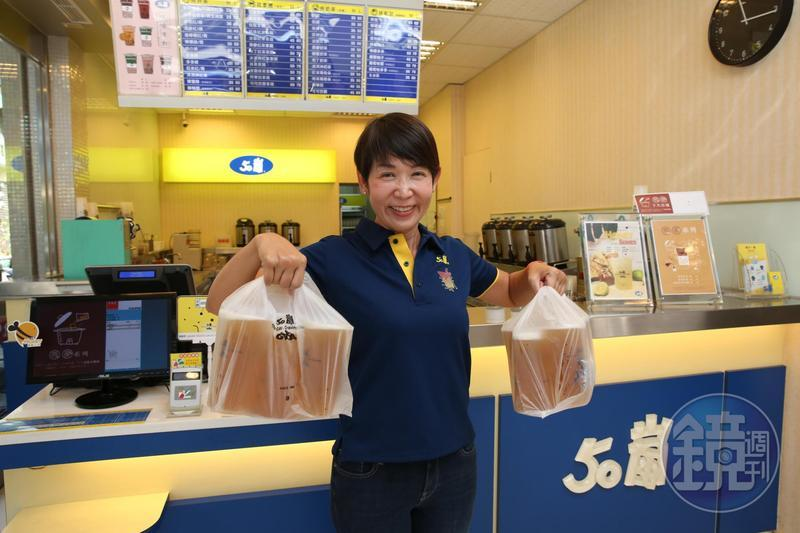

茶飲菜單
門市據點

綠茶連鎖專賣店
線上點餐
關於我們

關於50嵐
50嵐商標屬於五十嵐企業股份有限公司，自1994年始於台南德興路路邊的
一個小攤子，三年後，我們有了第一間標準店新孝店。而後，遇到一群同樣
對茶飲有熱情的親朋好友加入，由新嵐有限公司2000年代理高雄
區成立高雄總店，然後陸續在2002年由雅嵐股份有限公司代理台中區、2003年由深耕
茶業有限公司代理台北區、2005年由春嵐有限公司代理桃竹區並分別成立各區
總店、2016年春嵐有限公司併入雅嵐股份有限公司。這些年來我們只致力在
台灣耕耘，並堅持只賣茶飲，用精選茶葉，搭配好的原料，新鮮現調每一杯
茶飲。感謝每一位支持50嵐的客人一直以來對我們的愛護，我們將更努力，
希望能提供更好的商品與服務給每一位客人。
公告訊息
一、 50嵐僅在台灣設有各區代理公司，分別由各區代理公司負責管理經營，
我們並未在海外設立任何總部，亦不接受海外加盟，近來於大陸、香港等地
區仿冒開設之50嵐與我們並無任何關聯。
二、 台灣目前於台北區、中區與高雄區設有代理公司，台南區營運由50嵐總
部管理，宜蘭與花蓮地區則暫無設立。
三、 本公司與任何企業、各區代理所開發之新品牌或海外的投資，並無合作
關係，且50嵐總部至今並未更名品牌或以其他名號在海外經營、投資或擔任
顧問等，為避免造成消費者的混淆受騙，50嵐在此鄭重聲明，任何海外聲稱
為50嵐關聯企業者，均非事實。
北區
客服聯絡電話：0800-600-150
客服信箱：service@50lan.com
客服信箱：service@50lan.com
中區
客服聯絡電話：0800-885-050
客服信箱：service@50lan.com.tw
客服信箱：service@50lan.com.tw
南區
客服聯絡電話：0972-520607
客服信箱：service@xinlanlc.com.tw
客服信箱：service@xinlanlc.com.tw